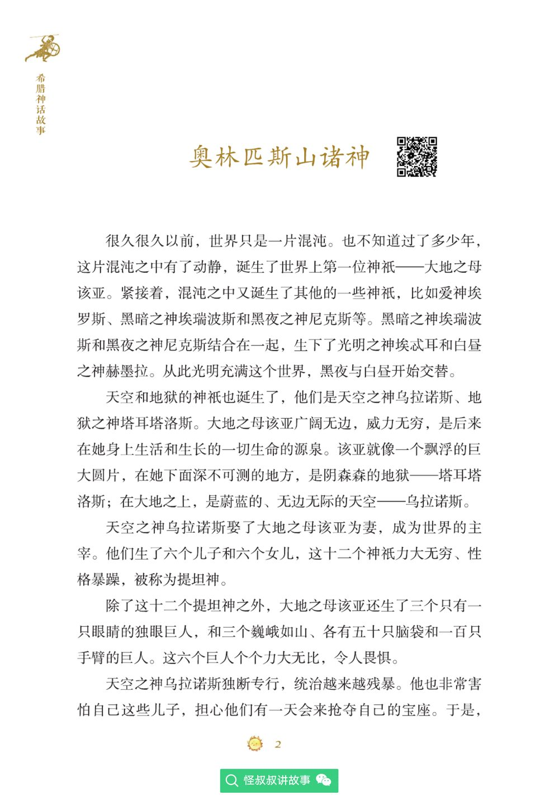

让 AI 当你的电子书排版师 — 一句话把扫描版 PDF 变成 Kindle 友好的 EPUB
这是真实的输入——《希腊神话故事》162 页扫描版 PDF。在 6 寸 Kindle 屏幕上，字体小到需要放大镜，而且无法调整字号、无法搜索、没有目录。

拖动中间的滑块，亲眼看扫描版 PDF 和 AI 生成的 EPUB 之间的差距。左边：字小到看不清的扫描图。右边：干净、可读、可调字号的 EPUB 正文。
很久很久以前，世界只是一片混沌。也不知道过了多少年，这片混沌之中有了动静，诞生了世界上第一位神只——大地之母该亚。紧接着，混沌之中又诞生了其他的一些神只，比如爱神埃罗斯、黑暗之神埃瑞波斯和黑夜之神尼克斯等。黑暗之神埃瑞波斯和黑夜之神尼克斯结合在一起，生下了光明之神埃忒耳和白昼之神赫墨拉。从此光明充满这个世界，黑夜与白昼开始交替。
天空和地狱的神祇也诞生了，他们是天空之神乌拉诺斯、地狱之神塔耳塔洛斯。大地之母该亚广阔无边，威力无穷，是后来在她身上生活和生长的一切生命的源泉。该亚就像一个飘浮的巨大圆片，在她下面深不可测的地方，是阴森森的地狱——塔耳塔洛斯；在大地之上，是蔚蓝的、无边无际的天空——乌拉诺斯。
天空之神乌拉诺斯娶了大地之母该亚为妻，成为世界的主宰。他们生了六个儿子和六个女儿，这十二个神只力大无穷、性格暴躁，被称为提坦神。
除了这十二个提坦神之外，大地之母该亚还生了三个只有一只眼睛的独眼巨人，和三个巍峨如山、各有五十只脑袋和一百只手臂的巨人。这六个巨人个个力大无比，令人畏惧。
天空之神乌拉诺斯独断专行，统治越来越残暴。他也非常害怕自己这些儿子，担心他们有一天会来抢夺自己的宝座。于是，
用户只需把 PDF 给 AI，说一句"转成 EPUB"。AI 自动完成下面全部工作——页面分类、元数据提取、OCR 校对、排版推断，全程零干预。下方流程自动循环演示：
这是 AI 自动生成的成品。左侧目录可点击跳转，正文支持字号调节，每个故事独立成页。以下是真实的转换结果，非模拟：
AI 不只是识别文字，还理解内容语义来校对错误。左边是 OCR 原始输出（标红为错误），右边是 AI 校对后的结果（标绿为修正）：
# 阅读指w
# 尼俄昇柏
# 羊？送！易p
>[low-confidence] 0/插我
>[low-confidence] /：
06/王国缉采装
↑ 标题错字、乱码、低置信度文本，传统工具直接输出，无法阅读
# 阅读指导
# 尼俄柏
[装饰页已自动跳过]
[低置信度噪声已清理]
[低置信度噪声已清理]
[目录文本已正确识别]
↑ AI 理解上下文修正错字，清理噪声，跳过装饰页，输出干净文本
PDF2BOOK 的核心创新：AI 不只是调用 OCR，而是像一位编辑一样完成所有需要"理解内容"的决策。
AI 审查 OCR 结果，理解语义判断封面/版权/目录/正文/尾页，自动跳过无关页——规则无法穷举。
从版权页 OCR 文本中提取书名、作者、ISBN、出版社（CIP 标准 GB/T 12451），用户无需手填。
基于上下文语义修正错别字、调整标题层级、清理噪声。置信度三级标记，低置信度文本重点校对。
统计 H1/H2/H3 标题分布，判断故事集 vs 长篇小说，自动选择最佳分章粒度和目录深度。
OCR 结果存 SQLite，AI 调整决策后重跑只需秒级（不用重新 OCR 数十分钟）。支持断点续作。
基于感知哈希（pHash）聚类检测重复装饰图（章节分隔符、花饰），自动从 EPUB 剥离，保护功能图。
自动将"标题／页码"格式目录转为可点击的竖排链接列表，跳转到对应章节。
642 个单元测试、配置驱动、多 OCR 后端可插拔、批量并行处理、Trae Skill 原生集成。